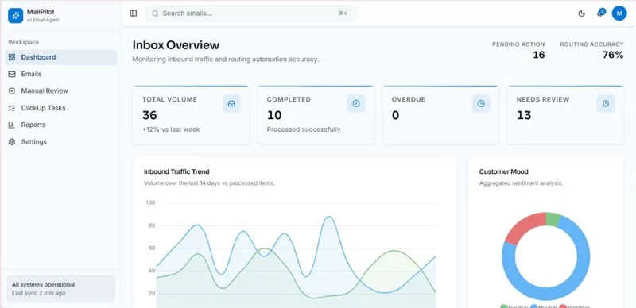
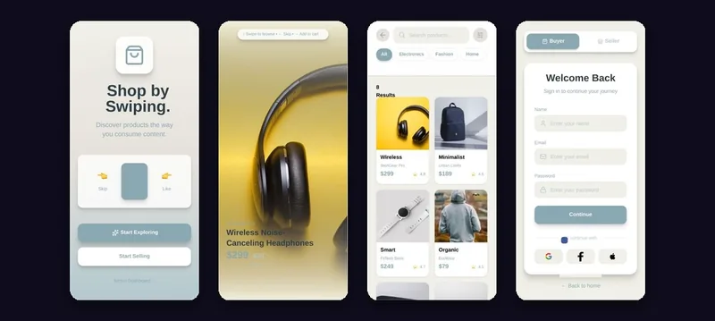
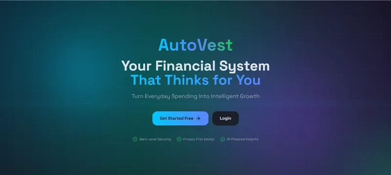
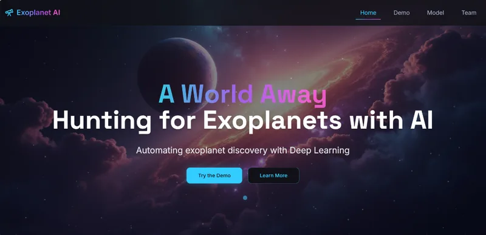
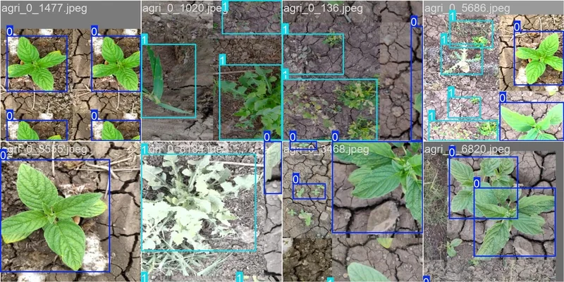
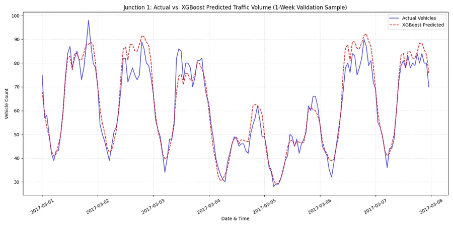
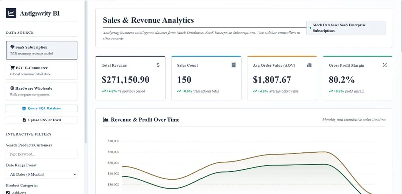
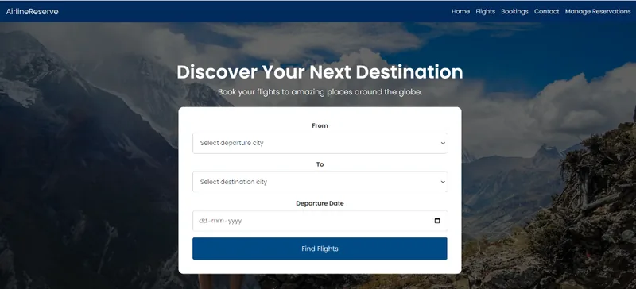
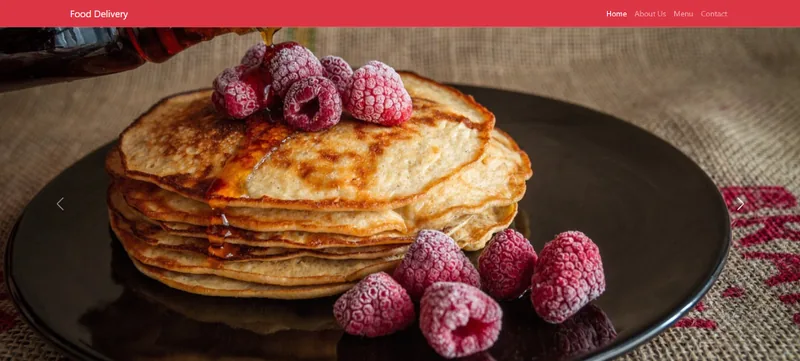
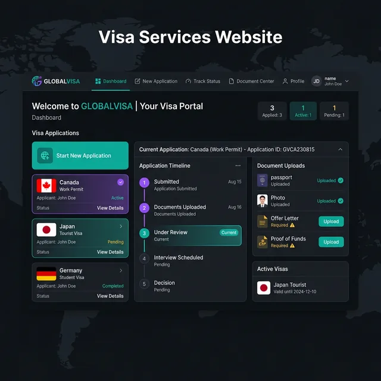

I'm a Computer Science undergraduate (CGPA 9.53/10.0) with hands-on experience across full-stack development, AI automation, and machine learning.
I've built and deployed end-to-end projects including MailPilot (AI email monitoring & task automation), Automated Exoplanet Hunter (99.9% recall for NASA Space Apps 2025), AutoVest (AI micro-investment assistant), and Pixoura (Top 5 of 50 teams at Designathon 2026).
During my current full-stack internship at VNC Global, I've gained production experience with Next.js, React, FastAPI, Supabase, PostgreSQL, and Turborepo.
class HarshiliPatni:
def __init__(self):
self.name = "Harshili Patni"
self.role = "Full-Stack & AI/ML Engineer"
self.location = "Vadodara, Gujarat"
self.education = "B.Tech CSE"
self.cgpa = 9.53
self.interests = [
"Full-Stack Dev",
"AI Automation",
"Machine Learning"
]
def motto(self):
return "Build. Learn. Repeat."
Production-ready shared-inbox automation platform built with TypeScript, Python, Prisma/LibSQL, and OpenAI NLP. Retrieves incoming emails via Microsoft 365 / IMAP, performs automated sentiment, intent, and urgency classification for department routing, syncs ClickUp tasks automatically, and provides real-time SLA compliance visibility on a centralized dashboard.

Mobile-first “Watch, Feel, Buy” video commerce experience crafted for Designathon 2026 at ITM SLS Baroda University, placing in the Top 5 of 50 teams. Designed an intuitive swipe-left/skip and swipe-right/add-to-cart discovery flow alongside buyer/seller onboarding, product search, and streamlined checkout to cut decision fatigue via simple personalization.

Full-stack personal finance and micro-investing web application built with React, TypeScript, and Vite. Calculates an AI-powered Financial Health Score (0–100), flags recurring subscription leaks, recommends allocations through an adaptive investment engine, and automates spare-change investing via everyday transaction round-ups.

Interpretable AI vetting application built for NASA Space Apps Challenge 2025 using FastAPI, Python, React, and TypeScript on NASA Kepler and TESS mission datasets. Achieved 99.9% recall with a CPU-efficient Gradient Boosting Classifier, supporting real-time batch CSV processing, contamination flagging, and confidence scoring — cutting vetting time from weeks to milliseconds.

Computer vision object detection pipeline developed during my Machine Learning internship at UCT to enable targeted herbicide spraying in sesame cultivation. Expanded 546 raw samples to 1,300 augmented bounding-box images and fine-tuned a custom YOLOv8 Nano (YOLOv8n) detector (512×512 resolution, 50 epochs) for fast, edge-ready crop vs. weed differentiation.

Time-series machine learning pipeline forecasting hourly vehicle volumes across four urban city junctions from 48,120 historical records. Modeled commute peaks, seasonalities, and holiday patterns with a tuned XGBoost Regressor validated under a strict temporal split, achieving R² = 0.8961, RMSE = 8.60, and MAE = 5.86.
Real-time computer vision assistant built with Python, OpenCV, Ultralytics YOLOv8, and Pandas to help locate misplaced everyday items (remote, keys, glasses). Continuously logs detected objects with confidence scores, room location tags, and timestamps to structured CSV memory, enabling instant historical queries to trace where an item was last seen.

Interactive business intelligence dashboard built with JavaScript and ApexCharts across B2B SaaS, B2C E-Commerce, and wholesale datasets. Includes an in-browser SQL query console simulator, drag-and-drop CSV/XLSX import, dynamic KPI variance tracking, AI-generated revenue and margin insights, multi-dimensional slicers, and CSV ledger export.

Responsive flight booking and reservation management web application built with HTML, Bootstrap, jQuery, PHP, and MySQL. Supports multi-page flight search, interactive seat-map selection, end-to-end ticket booking workflows, payment confirmation states, and a reservation management portal.

Responsive online food ordering and delivery web application built with HTML, CSS, and JavaScript. Features a clean, intuitive interface for browsing restaurant menus, customizing dish orders, managing cart items, and tracking delivery progress seamlessly across desktop and mobile.

Full-stack visa and immigration services platform built with React, Node.js, SCSS, and CSS. Provides dedicated country guides, visa service catalogs, consultation inquiry workflows, and a responsive multi-page client portal backed by a custom Node.js server.
Responsive front-end web application for exploring travel destinations, comparing stays, and booking hotels. Crafted with HTML, CSS, and JavaScript, featuring curated destination discovery cards, interactive booking sections, and a clean, user-friendly travel planning interface.
Relevant Coursework:
Placed in the Top 5 of 50 teams at ITM SLS Baroda University (Feb 2026), designing Pixoura’s swipe-based video commerce MVP.
View CertificateParticipated in the Advance Course on Emerging Technologies — a SAP CSR initiative implemented by Edunet Foundation.
View CertificateBuilt Automated Exoplanet Hunter, an interpretable AI vetting tool achieving 99.9% recall on NASA Kepler/TESS datasets.
View CertificateParticipated in Game Jam & Code Clash at ITM SLS Baroda University (Feb 2025), building and solving algorithmic problems under tight deadlines.
Microsoft Learn • Cloud Skills Challenge (6/6 Modules)
Completed the Microsoft Azure AI fundamentals collection covering core artificial intelligence workloads and machine learning concepts.
View CertificateSimplilearn • Certificate #10887955
Foundational training on big data ecosystems, distributed processing concepts, and analytical tooling for large-scale data workflows.
View CertificateITMBU × HackerRank • TAP Cell (SOCSET)
Hands-on algorithmic problem-solving and data structures workshop conducted in collaboration with HackerRank Campus Crew.
View CertificateSAP × Edunet Foundation • Code Unnati Program
Presented an applied innovation project during the SAP Code Unnati Innovation Marathon 2025–26 under the SAP CSR program.
View CertificateI'm currently looking for new opportunities and my inbox is always open. Whether you have a question, a project idea, or just want to say hi — I'd love to hear from you!